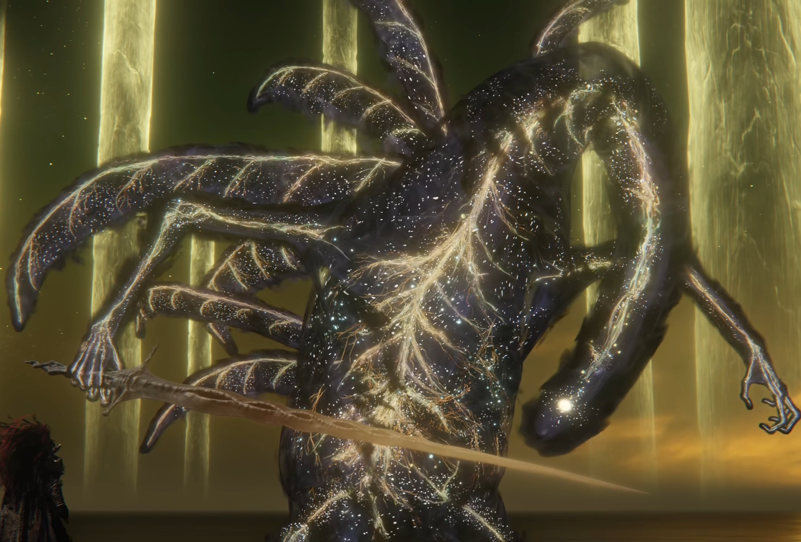

Elden Ring

Elden Ring é um aclamado RPG de ação em mundo aberto desenvolvido pela FromSoftware com a colaboração do escritor George R. R. Martin. No jogo, você controla um Maculado, um guerreiro exilado que deve explorar as perigosas Terras Intermédias para recuperar os fragmentos do Anel Prístino, as Grandes Runas, que foram corrompidas pelas mãos de semideuses. Com um combate soulslike desafiador e alta liberdade de exploração, seu objetivo final é enfrentar essas divindades para restaurar a ordem e se tornar o novo Lorde Prístino.